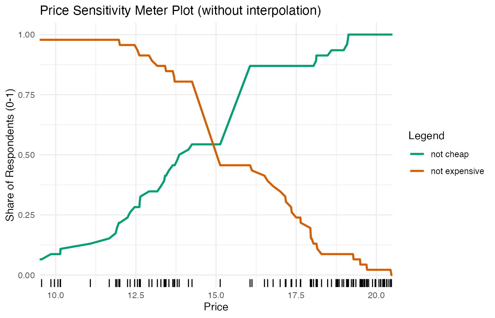
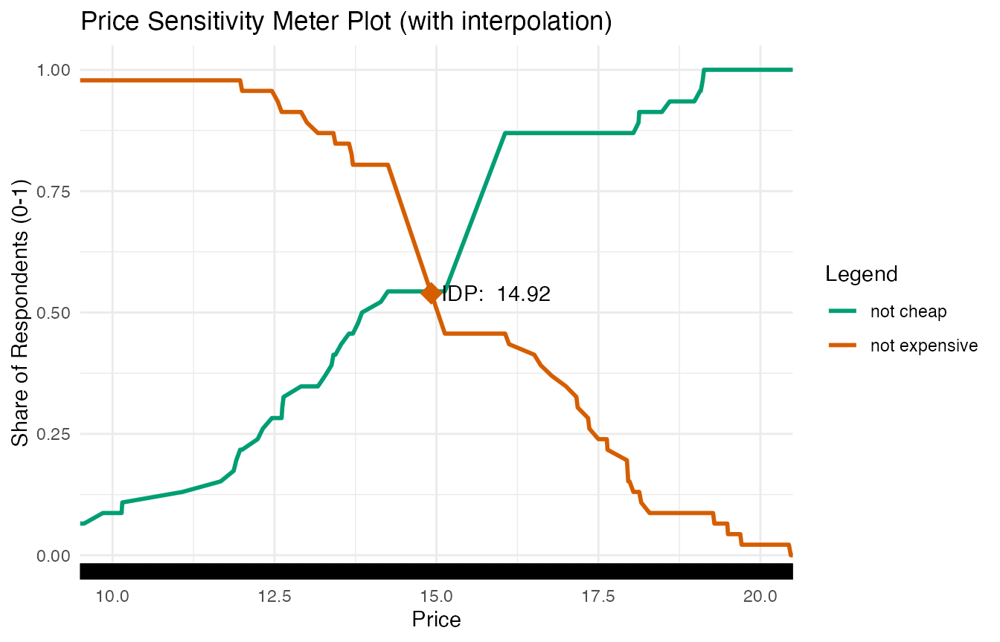
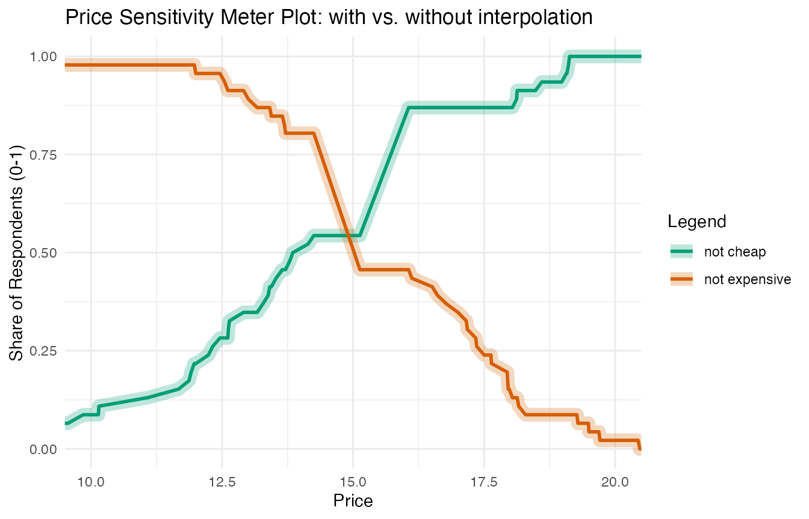

vignettes/interpolation-in-small-samples.Rmd
interpolation-in-small-samples.RmdSparse price information can become a problem when running Price
Sensitivity Meter Analyses, particularly in small samples. In order to
deal with this issue, the pricesensitivitymeter package has an
option interpolate to approximate values on the price
curves for all values where the actual information from respondents is
missing.
This vignette illustrates the underlying problem and explains how the
interpolate argument provides a solution.
Consider an example with the following price information.
set.seed(1976)
# create random variables
toocheap <- sort(round(rnorm(n = 50, mean = 8, sd = 1.5), digits = 2))
tooexpensive <- sort(round(rnorm(n = 50, mean = 20, sd = 1), digits = 2))
cheap <- sort(round(rnorm(n = 50, mean = 15, sd = 3), digits = 2))
expensive <- sort(round(rnorm(n = 50, mean = 16, sd = 3), digits = 2))
# setting up alternative "cheap"/"expensive" variables with a price step
pricestep_cheap <- which(cheap > 14.25 & cheap < 17.5)
cheap_alt <- cheap
cheap_alt[pricestep_cheap] <- round(mean(cheap_alt[pricestep_cheap]), digits = 2)
pricestep_expensive <- which(expensive > 14 & expensive < 16)
expensive_alt <- expensive
expensive_alt[pricestep_expensive] <- round(mean(expensive_alt[pricestep_expensive]), digits = 2)When we run a Price Sensitivity Meter Analysis on the data and visualize it, we get the following result. (The plot is slightly simplified: It does not show the “too cheap” and “too expensive” curves, as they are not relevant for the example. Moreover, it is slightly zoomed in.)
library(pricesensitivitymeter)
# Running the analysis with price steps and without interpolation
psm_steps <- psm_analysis(toocheap = toocheap,
cheap = cheap_alt,
expensive = expensive_alt,
tooexpensive = tooexpensive,
validate = TRUE,
interpolate = FALSE)
library(ggplot2)
# Plot with price steps
psmplot_steps <- ggplot(data = psm_steps$data_vanwestendorp, aes(x = price)) +
geom_line(aes(y = ecdf_not_cheap, # line: not cheap
colour = "not cheap"),
size = 1) +
geom_line(aes(y = ecdf_not_expensive, # line: not expensive
colour = "not expensive"),
size = 1) +
geom_rug() +
annotate(geom = "point", # Indifference Price Point (intersection of "not cheap" and "not expensive")
x = psm_steps$idp,
y = psm_steps$data_vanwestendorp$ecdf_not_expensive[psm_steps$data_vanwestendorp$price == psm_steps$idp],
size = 5,
shape = 18,
colour = "#D55E00")
#> Warning: Using `size` aesthetic for lines was deprecated in ggplot2 3.4.0.
#> ℹ Please use `linewidth` instead.
#> This warning is displayed once every 8 hours.
#> Call `lifecycle::last_lifecycle_warnings()` to see where this warning was
#> generated.
psmplot_steps +
labs(x = "Price",
y = "Share of Respondents (0-1)",
title = "Price Sensitivity Meter Plot (without interpolation)") +
scale_colour_manual(name = "Legend",
values = c("not cheap" = "#009E73",
"not expensive" = "#D55E00")) +
annotate(geom = "text", # Label of Indifference Price Point
x = psm_steps$idp + 1,
y = psm_steps$data_vanwestendorp$ecdf_not_expensive[psm_steps$data_vanwestendorp$price == psm_steps$idp] - 0.05,
label = paste("IDP: ", psm_steps$idp)) +
coord_cartesian(xlim = c(10, 20)) +
theme_minimal()
The Indifference Price Point (IDP) in this plot is not at the actual
intersection of the “not cheap” and the “not expensive” curve. This is
due to the data structure: We have sparse information for prices between
14 and 15. This can be seen in the rug plot close to the x-axis: Each
vertical line indicates a price for which we have information in our
data - however, there is a considerable gap around 14-15 (caused by the
initial data manipulation that added price steps). The combination of
price steps (as can be seen in the steep slope of the curves in this
area) and sparse data points creates this problem. If the
interpolate argument is set to FALSE, the
psm_analysis() function uses the first price for which the
“not expensive” curve is higher than the “not cheap” curve, which is the
case for a price of 15.13 in our example.
A larger sample size is usually sufficient to overcome this issue.
However, this might not always be possible. Therefore, the
psm_analysis() function has an optional argument which
helps to interpolate the pricing curve in cases of sparse
information.
interpolate Argument
The psm_analysis function includes an optional argument
interpolate. If this argument is set to TRUE,
the function uses linear interpolation to estimate the price curves
between the price points that are provided by the respondents. Consider
an easy example: If the “not cheap” function is at 20% for a price of
5.99 and at 21% for a price of 6.01, the function would estimate that it
is at 20.5% for a price of 6.00. The function uses price steps as
defined in the interpolation_steps argument, which has a
default value of 0.01.1
Below are the results for the same data when the
interpolate function is set to TRUE.
# Running the analysis with interpolation
psm_interpolated <- psm_analysis(toocheap = toocheap,
cheap = cheap_alt,
expensive = expensive_alt,
tooexpensive = tooexpensive,
validate = TRUE,
interpolate = TRUE)
# Plot with interpolated price steps
psmplot_interpolated <- ggplot(data = psm_interpolated$data_vanwestendorp, aes(x = price)) +
geom_line(aes(y = ecdf_not_cheap, # line: not cheap
colour = "not cheap"),
size = 1) +
geom_line(aes(y = ecdf_not_expensive, # line: not expensive
colour = "not expensive"),
size = 1) +
geom_rug() +
annotate(geom = "point", # Indifference Price Point (intersection of "cheap" and "expensive")
x = psm_interpolated$idp,
y = psm_interpolated$data_vanwestendorp$ecdf_not_expensive[psm_interpolated$data_vanwestendorp$price == psm_interpolated$idp],
size = 5,
shape = 18,
colour = "#D55E00")
psmplot_interpolated +
labs(x = "Price",
y = "Share of Respondents (0-1)",
title = "Price Sensitivity Meter Plot (with interpolation)") +
scale_colour_manual(name = "Legend",
values = c("not cheap" = "#009E73",
"not expensive" = "#D55E00")) +
annotate(geom = "text", # Label of Indifference Price Point
x = psm_interpolated$idp + 1,
y = psm_interpolated$data_vanwestendorp$ecdf_not_expensive[psm_interpolated$data_vanwestendorp$price == psm_interpolated$idp],
label = paste("IDP: ", psm_interpolated$idp)) +
coord_cartesian(xlim = c(10, 20)) +
theme_minimal()
The rug plot demonstrates now that the data includes information for more pricing steps due to the interpolation.
The following plot demonstrates the close relationship between the original data and the interpolated data: The thicker semi-transparent line shows the interpolated values of the “not cheap” and “not expensive” curves. The thinner solid lines are the original data.

It may make sense to set a higher value when this subdivision is not practical in the currency - e.g. for Japanese Yen or Chilean Pesos - or when the product for which the price is assessed is quite expensive. In both cases, a reduced granularity will not affect the results, but increase the computational efficiency.↩︎